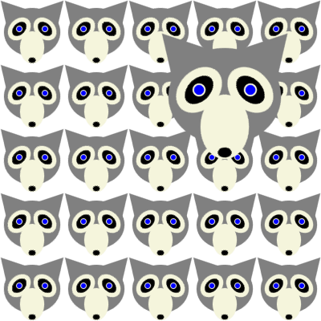
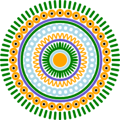
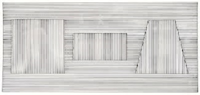
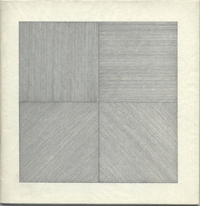
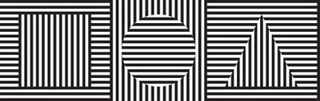

Fun With For Loops
Create a website that illustrates the use of For Loops in drawing on the HTML canvas as outlined below.
Turning it: To turn in this project, you should place the website in a folder called forloops inside of your class website and link the site from your main class homepage.
Requirements:
The site should contain at least these pages:
- (1 page) A home page with a title and links to the pages listed below. Each page below should include a Spork canvas on which your image is drawn.
- (1 page) Convert your creature code to a function creature(x,y,r) which draws your creature centered at the point (x,y) with radius r. Then use this function to draw a grid with repetetive copies of your creature.

- (1 page) Draw a circle pattern such as this. I suggest you follow these directions to make a function which draws the circle pattern.
- Use the standard 400x400 Spork canvas initially.
- First translate to (200,200) like we did with the creature code.
- Use For Loops to draw a circle pattern centered at (0,0).
- Make sure the radius of the outside circle is close to 200.
- After your translation, but before you begin drawing, draw a filled white circle whose radius is the same as your largest intended radius in the pattern. We are doing this because later we do not want the patterns to be transparent.
- Convert your code to a function circlePattern(x,y,r) which draws your pattern centered at (x,y) with radius r like we did the creature function.
- For now, use your code to draw your pattern in the center of the Spork canvas.
- We will use this pattern again later.

- (1 page) Use For Loops and clipping to draw a picture like one of those below by Sol Lewitt (which are composed of sets of parallel lines).


